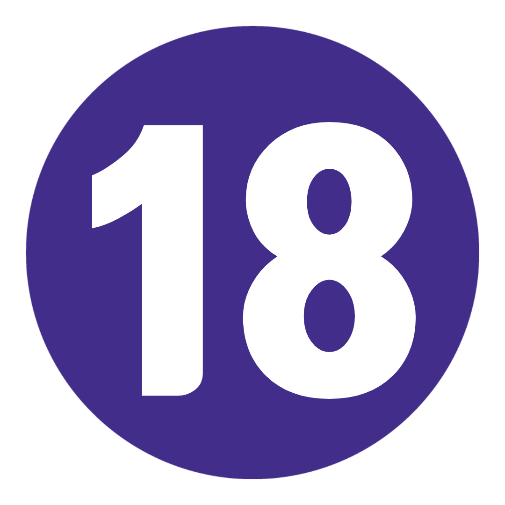
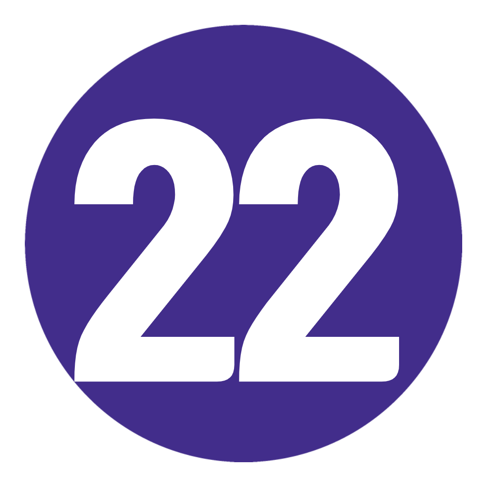

여행 개요
지도
TRIP VIBE = 사교 활동, 버킷리스트 명소, 즐거운 시간이 가득한 빠른 속도로 진행되는 재미.
메가. 유럽 사람. 정말 다 그렇지 않나요? 진지하게, 이 여행은 정말로 굉장하다. 우리는 49일을 의미합니다. 18개국이 큽니다.
일을 반으로 나누지 않는다면 이것이 당신을 위한 것입니다. 서부의 옛 수도에서 새롭게 부상하는 발칸 반도와 그 너머까지, 우리가 메가 유러피안이 FULL이라고 말할 때 우리를 믿으십시오.
문화가 가득하고, 음식이 가득하고, 이상하고, 경이롭습니다. 완료되면? 당신은 더 현명해질 것입니다. 자유인. 완전체. 그리고 당신은 세상을 똑같이 보지 않을 것입니다.
여행 일정
-
 영국 런던에서 프랑스 파리까지
일상을 뒤로하고 특별함을 발견할 준비를 하십시오. LDN-town에서 갱단을 만나고, Pringles를 구입하고 AUX 코드를 뽑으십시오. 우리는 City of Lights를 위해 일찍 길을 나서고 있습니다. 코코 샤넬, 모나리자 및 세계 최고의 패스트리의 고향 - 파리는 패션, 문화, 군침이 도는 음식의 모든 것에 대해 유럽의 수도라는 명성을 얻었습니다. 오늘 밤의 그룹 저녁 식사 전에 드라이브 투어에서 모든 쇼 스토퍼를 확인하십시오. 이것은 하나의 장대한 라이드가 될 것입니다.
영국 런던에서 프랑스 파리까지
일상을 뒤로하고 특별함을 발견할 준비를 하십시오. LDN-town에서 갱단을 만나고, Pringles를 구입하고 AUX 코드를 뽑으십시오. 우리는 City of Lights를 위해 일찍 길을 나서고 있습니다. 코코 샤넬, 모나리자 및 세계 최고의 패스트리의 고향 - 파리는 패션, 문화, 군침이 도는 음식의 모든 것에 대해 유럽의 수도라는 명성을 얻었습니다. 오늘 밤의 그룹 저녁 식사 전에 드라이브 투어에서 모든 쇼 스토퍼를 확인하십시오. 이것은 하나의 장대한 라이드가 될 것입니다.
키워드 저녁 + 파리 명소 드라이브 -
 파리
이것은 당신의 날, 당신의 방법입니다. 따라서 매초를 계산하십시오. 루브르 박물관(미리 티켓을 예약하세요!)과 오르세 미술관을 방문하여 버킷리스트를 확고히 만드십시오. 샹젤리제 거리를 따라 플라스틱을 플래시하십시오. 파리의 뒷골목과 골목길을 따라 숨겨진 보석을 발견하십시오. 걷는 것이 당신의 것이 아니겠습니까? 옵션으로 제공되는 자전거 투어를 통해 송아지에게 운동을 제공하세요. 또는 센 강을 유람하면서 물에서 파리의 분위기를 만끽하십시오. 오늘 밤, 선택 가능한 카바레 쇼를 위해 인상적인 드레스를 입으십시오. 생각해보세요: 번쩍이는 조명, 죽음을 정의하는 곡예, OTT 의상 및 캔 캔(물론).
파리
이것은 당신의 날, 당신의 방법입니다. 따라서 매초를 계산하십시오. 루브르 박물관(미리 티켓을 예약하세요!)과 오르세 미술관을 방문하여 버킷리스트를 확고히 만드십시오. 샹젤리제 거리를 따라 플라스틱을 플래시하십시오. 파리의 뒷골목과 골목길을 따라 숨겨진 보석을 발견하십시오. 걷는 것이 당신의 것이 아니겠습니까? 옵션으로 제공되는 자전거 투어를 통해 송아지에게 운동을 제공하세요. 또는 센 강을 유람하면서 물에서 파리의 분위기를 만끽하십시오. 오늘 밤, 선택 가능한 카바레 쇼를 위해 인상적인 드레스를 입으십시오. 생각해보세요: 번쩍이는 조명, 죽음을 정의하는 곡예, OTT 의상 및 캔 캔(물론).
추가 옵션 파리 카바레 쇼: €65부터 / 세느강 유람선: €10부터 / 파리 자전거 투어: €30부터 -
 파리
이것은 단순히 당신을하는 날입니다. 루브르 박물관(미리 티켓을 예약하세요!)과 오르세 미술관을 방문하여 버킷리스트를 확고히 만드십시오. 마을 최고의 제과점을 찾아보세요(추천은 여행 리더에게 문의하세요). Shakespeare and Co. Bookshop에서 역사의 서가 사이에서 길을 잃으십시오. 샹젤리제 거리를 따라 플라스틱을 플래시하십시오. 또는 I Love You Wall에서 기분 좋은 분위기를 연출해보세요. 워커 아님? 옵션으로 제공되는 자전거 투어에서 허벅지를 운동하세요. 또는 세느강을 따라 유람선을 타고 사랑의 도시를 또 다른 모습으로 볼 수 있습니다. 오늘 밤, 카바레에서 저녁 옵션으로 전력을 다하십시오. 밝은 조명, OTT 의상 및 죽음에 도전하는 곡예를 생각해 보십시오.
파리
이것은 단순히 당신을하는 날입니다. 루브르 박물관(미리 티켓을 예약하세요!)과 오르세 미술관을 방문하여 버킷리스트를 확고히 만드십시오. 마을 최고의 제과점을 찾아보세요(추천은 여행 리더에게 문의하세요). Shakespeare and Co. Bookshop에서 역사의 서가 사이에서 길을 잃으십시오. 샹젤리제 거리를 따라 플라스틱을 플래시하십시오. 또는 I Love You Wall에서 기분 좋은 분위기를 연출해보세요. 워커 아님? 옵션으로 제공되는 자전거 투어에서 허벅지를 운동하세요. 또는 세느강을 따라 유람선을 타고 사랑의 도시를 또 다른 모습으로 볼 수 있습니다. 오늘 밤, 카바레에서 저녁 옵션으로 전력을 다하십시오. 밝은 조명, OTT 의상 및 죽음에 도전하는 곡예를 생각해 보십시오.
키워드 아침밥
추가 옵션 파리 카바레 쇼: €80부터 / 세느강 유람선: €10부터 / 파리 자전거 투어: €30부터 -
 파리에서 루아르 계곡을 거쳐 보르도까지
통에서 비노를 마시지 않나요? 다음 정거장이 마음에 들 거야 우리가 루아르 계곡을 지나갈 때, 창에 코를 박고 수백 년 된 포도 덩굴들이 줄지어 지나가는 것을 지켜보세요. 첫 번째 정거장? 초고가의 샤토 드 샹보르. 레오나르도 다빈치가 직접 디자인한 것으로 추정됩니다 - 원하신다면, 60개의 화려하게 장식된 방들을 둘러보고, (파리 도심만큼 큰) 주변 정원을 탐험하고, 마음을 뒤흔들리게 하는 이중 나선형 계단을 오를 시간이 있습니다. 이곳은 당신을 프랑스 왕족처럼 느끼게 해줄 것이다. 나중에 우리는 전문 여행 지도자와 함께 보르도로 가서 이 1200년 된 도시를 돌아다닐 것이다. 그렇다면, 나머지는 당신에게 달렸어요. 우리의 제안? 진정한 프랑스인처럼 동네 치즈와 좋은 물건 한 병을 사고 소풍도 가죠. 사막을 위한 공간을 남겨두세요 - 당신은 카넬레를 먹어보고 싶을 것입니다. 우리를 믿으세요.
파리에서 루아르 계곡을 거쳐 보르도까지
통에서 비노를 마시지 않나요? 다음 정거장이 마음에 들 거야 우리가 루아르 계곡을 지나갈 때, 창에 코를 박고 수백 년 된 포도 덩굴들이 줄지어 지나가는 것을 지켜보세요. 첫 번째 정거장? 초고가의 샤토 드 샹보르. 레오나르도 다빈치가 직접 디자인한 것으로 추정됩니다 - 원하신다면, 60개의 화려하게 장식된 방들을 둘러보고, (파리 도심만큼 큰) 주변 정원을 탐험하고, 마음을 뒤흔들리게 하는 이중 나선형 계단을 오를 시간이 있습니다. 이곳은 당신을 프랑스 왕족처럼 느끼게 해줄 것이다. 나중에 우리는 전문 여행 지도자와 함께 보르도로 가서 이 1200년 된 도시를 돌아다닐 것이다. 그렇다면, 나머지는 당신에게 달렸어요. 우리의 제안? 진정한 프랑스인처럼 동네 치즈와 좋은 물건 한 병을 사고 소풍도 가죠. 사막을 위한 공간을 남겨두세요 - 당신은 카넬레를 먹어보고 싶을 것입니다. 우리를 믿으세요.
키워드 아침밥 + 루아르 계곡 방문 + 트립리더와 함께하는 보르도 오리엔테이션 워크
추가 옵션 Château de Chambord 방문: €10부터 -
 보르도-카르카손
Château du Taillan 와이너리, mon ami에서는 항상 와인 시간입니다. 좋은 와인의 AB-Cabernets를 배우면서 소유자를 알아가고 소박한 지하실을 둘러보고 최고의 시음회를 연습하십시오. 그런 다음: 우리는 Carcassonne에 우리의 목표를 정할 것입니다. 보드 게임을 해본 적이 있다면 성벽으로 둘러싸인 카르카손의 요새가 중세 시대라는 것을 알게 될 것입니다. 여행 리더와 함께 Château Comtal, Basilica of Saints Nazarius 및 고대 도시의 요새를 확인하며 산책을 즐기십시오. 오늘 밤, 우리는 그룹 저녁 식사를 위해 호텔에서 다시 만날 것입니다. 오늘은 한마디로? 비범하다.
보르도-카르카손
Château du Taillan 와이너리, mon ami에서는 항상 와인 시간입니다. 좋은 와인의 AB-Cabernets를 배우면서 소유자를 알아가고 소박한 지하실을 둘러보고 최고의 시음회를 연습하십시오. 그런 다음: 우리는 Carcassonne에 우리의 목표를 정할 것입니다. 보드 게임을 해본 적이 있다면 성벽으로 둘러싸인 카르카손의 요새가 중세 시대라는 것을 알게 될 것입니다. 여행 리더와 함께 Château Comtal, Basilica of Saints Nazarius 및 고대 도시의 요새를 확인하며 산책을 즐기십시오. 오늘 밤, 우리는 그룹 저녁 식사를 위해 호텔에서 다시 만날 것입니다. 오늘은 한마디로? 비범하다.
키워드 아침밥 + 공식 만찬 + Château du Taillan에서 와인 시음 + Trip Leader와 함께하는 카르카손 오리엔테이션 워크 -
 카르카손에서 안도라를 거쳐 스페인 바르셀로나로
우리는 오늘 아름다운 피레네 산맥을 가로지르며 안도라에 잠시 들릅니다. 재미있는 사실: 이 나라는 자동차로 한 쪽에서 다른 쪽으로 약 40km 떨어져 있습니다. 카탈루냐의 수도를 향해! 아르누보, 섹시한 악센트, 군침 도는 타파스의 도시로의 비엔베니도스(환영). 올림픽 공원, 에스파냐 광장, 국립 박물관, 몬주익 언덕 등을 둘러보며 드라이브 투어를 통해 바르샤를 느껴보세요. 그런 다음: 저녁 식사를 위한 최고의 빠에야(pah-AY-yuh)를 찾을 수 있는 위치에 대해 여행 리더에게 질문하십시오.
카르카손에서 안도라를 거쳐 스페인 바르셀로나로
우리는 오늘 아름다운 피레네 산맥을 가로지르며 안도라에 잠시 들릅니다. 재미있는 사실: 이 나라는 자동차로 한 쪽에서 다른 쪽으로 약 40km 떨어져 있습니다. 카탈루냐의 수도를 향해! 아르누보, 섹시한 악센트, 군침 도는 타파스의 도시로의 비엔베니도스(환영). 올림픽 공원, 에스파냐 광장, 국립 박물관, 몬주익 언덕 등을 둘러보며 드라이브 투어를 통해 바르샤를 느껴보세요. 그런 다음: 저녁 식사를 위한 최고의 빠에야(pah-AY-yuh)를 찾을 수 있는 위치에 대해 여행 리더에게 질문하십시오.
키워드 아침밥 + 안도라 방문 + 바르셀로나 하이라이트 드라이브 -
 바르셀로나
자발적인 일을 할 시간입니다. 그러나 몇 가지 제안이 필요한 경우 지원해 드립니다. 구엘 공원(Park Güell)과 사그라다 파밀리아(Sagrada Familia)는 꼭 봐야 할 곳입니다. 하지만 그냥 걸어서 올라갈 수 있다고 생각하지 마십시오. 먼저 tix를 온라인으로 예약해야 합니다. 그런 다음: 람블라 거리(Las Ramblas)의 광란을 탐험하거나, 천년이 넘는 예술 교육을 위해 국립 박물관으로 향하거나, 고딕 지구의 구불구불한 골목길 사이에서 길을 잃습니다. 자신을 잃고 자신을 찾은 다음 Els Quatre Gats에서 맥주를 마시십시오. 모든 모험에서 약간의 시간이 필요하십니까? 수영을 하기 위해 바르셀로네타 해변으로 향합니다. 나중에 바르셀로나에서 가장 오래된 플라멩코 타블라오에서 카드에 선택적 쇼가 있습니다.
바르셀로나
자발적인 일을 할 시간입니다. 그러나 몇 가지 제안이 필요한 경우 지원해 드립니다. 구엘 공원(Park Güell)과 사그라다 파밀리아(Sagrada Familia)는 꼭 봐야 할 곳입니다. 하지만 그냥 걸어서 올라갈 수 있다고 생각하지 마십시오. 먼저 tix를 온라인으로 예약해야 합니다. 그런 다음: 람블라 거리(Las Ramblas)의 광란을 탐험하거나, 천년이 넘는 예술 교육을 위해 국립 박물관으로 향하거나, 고딕 지구의 구불구불한 골목길 사이에서 길을 잃습니다. 자신을 잃고 자신을 찾은 다음 Els Quatre Gats에서 맥주를 마시십시오. 모든 모험에서 약간의 시간이 필요하십니까? 수영을 하기 위해 바르셀로네타 해변으로 향합니다. 나중에 바르셀로나에서 가장 오래된 플라멩코 타블라오에서 카드에 선택적 쇼가 있습니다.
키워드 아침밥
추가 옵션 바르셀로나 플라멩코 쇼: €15부터 -
 바르셀로나에서 프랑스 리비에라까지
봉쥬르와 s'il vous plaît's 연습을 시작하세요. 현지인들에게 도움이 될 것입니다. 저희를 믿으세요. 오늘은 지중해 연안을 따라 화려한 프렌치 리비에라의 수도인 니스로 향합니다. 오후 시간을 보내기 전에 잘 알고 있는 Trip Leader와 함께 시내를 달려보세요! 약간의 셀럽 스포팅에 빠져보세요. 물놀이를 위해 해변으로 향합니다. 아니면 정말 맛있는 해산물을 먹을 수 있는 현지인을 찾아보세요. 오늘 밤에는 편안하게 앉아 해안가의 편안한 분위기를 즐겨보세요. 이것이 당신이 온 이유입니다.
바르셀로나에서 프랑스 리비에라까지
봉쥬르와 s'il vous plaît's 연습을 시작하세요. 현지인들에게 도움이 될 것입니다. 저희를 믿으세요. 오늘은 지중해 연안을 따라 화려한 프렌치 리비에라의 수도인 니스로 향합니다. 오후 시간을 보내기 전에 잘 알고 있는 Trip Leader와 함께 시내를 달려보세요! 약간의 셀럽 스포팅에 빠져보세요. 물놀이를 위해 해변으로 향합니다. 아니면 정말 맛있는 해산물을 먹을 수 있는 현지인을 찾아보세요. 오늘 밤에는 편안하게 앉아 해안가의 편안한 분위기를 즐겨보세요. 이것이 당신이 온 이유입니다.
키워드 아침밥 + Trip Leader와 함께하는 니스 오리엔테이션 워크 -
 모나코를 포함한 프렌치 리비에라
자유일 = 원하는 것을 정확히 할 수 있는 기회. 블루 비치의 일광욕용 라운저에 누워 여유를 즐겨보세요. 니스(Nice)의 구시가지(Old Town)에 있는 디자이너 부티크에서 마음껏 뛰어보세요. 또는 모든 전망을 감상할 수 있는 캐슬 힐(Castle Hill)을 트레킹하세요. 선택은 당신의 것입니다. 나중에: 우리는 모나코를 방문하여 그것을 한 단계 높일 것입니다. 그랑프리와 몬테카를로 카지노의 본고장인 우리는 도보 여행에서 1%가 어떻게 살고 있는지 볼 것입니다 (힌트: 페라리와 캐비어 목욕이 포함됨). 그런 다음 해안가를 따라 슈퍼요트와 완벽하게 손질된 소유자를 바라보세요. 또는 테이블을 치고 비를 내리게 하십시오(또는 하지 않음).
모나코를 포함한 프렌치 리비에라
자유일 = 원하는 것을 정확히 할 수 있는 기회. 블루 비치의 일광욕용 라운저에 누워 여유를 즐겨보세요. 니스(Nice)의 구시가지(Old Town)에 있는 디자이너 부티크에서 마음껏 뛰어보세요. 또는 모든 전망을 감상할 수 있는 캐슬 힐(Castle Hill)을 트레킹하세요. 선택은 당신의 것입니다. 나중에: 우리는 모나코를 방문하여 그것을 한 단계 높일 것입니다. 그랑프리와 몬테카를로 카지노의 본고장인 우리는 도보 여행에서 1%가 어떻게 살고 있는지 볼 것입니다 (힌트: 페라리와 캐비어 목욕이 포함됨). 그런 다음 해안가를 따라 슈퍼요트와 완벽하게 손질된 소유자를 바라보세요. 또는 테이블을 치고 비를 내리게 하십시오(또는 하지 않음).
키워드 아침밥 + Trip Leader와 함께하는 모나코 도보 여행 -
 프렌치 리비에라에서 스위스 알프스,스위스까지
스위스 알프스에 Tinder 약력이 있다면 다음과 같이 읽힐 것입니다. 재미로 가득한 야외 활동 애호가 – 함께 모험을 나눌 아드레날린 중독자를 찾고 있습니다. 오른쪽으로 스와이핑? 당근 빠따 지. 성대를 따뜻하게 하고, 프로방스를 지나 산으로 향하는 차를 타면서 흥을 돋울 것입니다. 당신의 상상 속의 동화 같은 마을에 신호를 보내십시오. 오묘한 Engelberg는 다음 이틀 밤 동안 우리의 기지가 될 것입니다. 나중에 우리는 호텔 바에 가거나 신선한 고산 공기에서 휴식을 취하기 전에 그룹 저녁 식사를 할 것입니다.
프렌치 리비에라에서 스위스 알프스,스위스까지
스위스 알프스에 Tinder 약력이 있다면 다음과 같이 읽힐 것입니다. 재미로 가득한 야외 활동 애호가 – 함께 모험을 나눌 아드레날린 중독자를 찾고 있습니다. 오른쪽으로 스와이핑? 당근 빠따 지. 성대를 따뜻하게 하고, 프로방스를 지나 산으로 향하는 차를 타면서 흥을 돋울 것입니다. 당신의 상상 속의 동화 같은 마을에 신호를 보내십시오. 오묘한 Engelberg는 다음 이틀 밤 동안 우리의 기지가 될 것입니다. 나중에 우리는 호텔 바에 가거나 신선한 고산 공기에서 휴식을 취하기 전에 그룹 저녁 식사를 할 것입니다.
키워드 아침밥 + 공식 만찬 -
 스위스 알프스
오늘은 당신의 날입니다. 그러니 마음껏 즐기세요. 등산. 자전거 타기. 스릴을 추구합니다. 모든 것이 여기에 있습니다. 회전 곤돌라를 타고 티틀리스 산 정상까지 올라가 모든 장엄한 전망을 감상할 수 있습니다(노력 없이). 또는 유당 불내증(obvs)이 아닌 이상 Birks를 타고 세계 최고의 핫 초콜릿과 치즈 퐁듀를 찾아 시내로 가십시오. 무엇을 선택하든 며칠 동안 조회수가 표시됩니다. 저녁 식사를 마친 후에는 휴식을 취하거나 갱단과 함께 마을을 누비십시오. 선택은 모두 당신의 몫입니다.
스위스 알프스
오늘은 당신의 날입니다. 그러니 마음껏 즐기세요. 등산. 자전거 타기. 스릴을 추구합니다. 모든 것이 여기에 있습니다. 회전 곤돌라를 타고 티틀리스 산 정상까지 올라가 모든 장엄한 전망을 감상할 수 있습니다(노력 없이). 또는 유당 불내증(obvs)이 아닌 이상 Birks를 타고 세계 최고의 핫 초콜릿과 치즈 퐁듀를 찾아 시내로 가십시오. 무엇을 선택하든 며칠 동안 조회수가 표시됩니다. 저녁 식사를 마친 후에는 휴식을 취하거나 갱단과 함께 마을을 누비십시오. 선택은 모두 당신의 몫입니다.
키워드 아침밥
추가 옵션 티틀리스 산으로의 경치 좋은 여행: 최저 CHF 92(여름에만 해당) -
 스위스 알프스에서 이탈리아 베니스까지
엄마를 위한 미니 퐁듀 세트를 구입하고 알프스에 작별 인사를 하세요. 우리는 오늘 그 유명한 침몰하는 도시로 향합니다. 호텔에 체크인한 후에는 모든 소란이 무엇인지 확인할 시간입니다. 산마르코 광장, 도제의 궁전, 아카데미아 다리 등을 둘러보는 도보 여행을 통해 베니스의 흔한 용의자들에 대해 알아보세요. 그리고 나서 – 이 아름답고 낭만적인 도시는 당신의 것입니다. 우리의 제안? 베니스(Venice)의 자홍색 일몰 중 하나가 내려다보이는 스프레이를 즐겨보세요. 아니면 맛있는 탄수화물이 함유된 이탈리아 요리를 위해 숨겨진 보석을 찾아보세요. 무엇을 먼저 시도할 건가요? 2개 주문합니다.
스위스 알프스에서 이탈리아 베니스까지
엄마를 위한 미니 퐁듀 세트를 구입하고 알프스에 작별 인사를 하세요. 우리는 오늘 그 유명한 침몰하는 도시로 향합니다. 호텔에 체크인한 후에는 모든 소란이 무엇인지 확인할 시간입니다. 산마르코 광장, 도제의 궁전, 아카데미아 다리 등을 둘러보는 도보 여행을 통해 베니스의 흔한 용의자들에 대해 알아보세요. 그리고 나서 – 이 아름답고 낭만적인 도시는 당신의 것입니다. 우리의 제안? 베니스(Venice)의 자홍색 일몰 중 하나가 내려다보이는 스프레이를 즐겨보세요. 아니면 맛있는 탄수화물이 함유된 이탈리아 요리를 위해 숨겨진 보석을 찾아보세요. 무엇을 먼저 시도할 건가요? 2개 주문합니다.
키워드 아침밥 + Trip Leader와 함께하는 베니스 도보 여행
추가 옵션 맞춤 여행 티셔츠 또는 후드티를 받으세요: 최저 €21 -
 베니스
모든 소란이 무엇인지 볼 시간입니다. 수백 년 된 건축물. 독창적인 요리. 그리고 양동이의 문화. 베니스는 탐험을 구걸하고 있습니다. 대운하를 따라 포함된 곤돌라를 탄 후에는 하루 종일 그렇게 할 수 있습니다. 제안이 필요하십니까? 내부 팁: 시간을 할애하여 이 세상에 없는 Libreria Acqua Alta 서점을 찾거나 Giudecca Island로 여행을 떠나 관광 트레일을 떠나십시오. 또는 위의 모든 것을 잊고 완벽한 젤라토를 찾으십시오. 방황하십시오. 현지인들과 채팅하세요. 운하와 광장의 미로에서 길을 잃으십시오. 갱단과 함께 해가 지는 것을 지켜보세요. 그것이 추억을 만드는 것입니다.
베니스
모든 소란이 무엇인지 볼 시간입니다. 수백 년 된 건축물. 독창적인 요리. 그리고 양동이의 문화. 베니스는 탐험을 구걸하고 있습니다. 대운하를 따라 포함된 곤돌라를 탄 후에는 하루 종일 그렇게 할 수 있습니다. 제안이 필요하십니까? 내부 팁: 시간을 할애하여 이 세상에 없는 Libreria Acqua Alta 서점을 찾거나 Giudecca Island로 여행을 떠나 관광 트레일을 떠나십시오. 또는 위의 모든 것을 잊고 완벽한 젤라토를 찾으십시오. 방황하십시오. 현지인들과 채팅하세요. 운하와 광장의 미로에서 길을 잃으십시오. 갱단과 함께 해가 지는 것을 지켜보세요. 그것이 추억을 만드는 것입니다.
키워드 아침밥 + 대운하를 타고 내려가는 곤돌라 -
 피사를 경유하여 베니스에서 피렌체로
앞으로! 우리는 토스카나 요리의 수도이자 젤라토의 발상지로 계속 나아가고 있습니다. 하지만 먼저: 피사. 그 사진을 찍을 예정이라면 독특한 것을 생각해 보세요. 부디. 오늘 저녁 식사를 하기 전에 해질녘에 아르노 강을 따라 산책을 즐겨보세요. 그럼: 누가 노래방이라고 했지? 당신이 그것을 원한다면 지역 바에서 고전의 전투에서 갱단에 합류하십시오. 또는 젤라테리아에서 좋은 재료를 한 스쿱(또는 두 개) 찾아보세요. 어떻게 될까요? 솔티드 카라멜? 라벤더? 화이트 초콜릿? 시나몬? 절대로 필요한 것. 시험. 그들. 모두.
피사를 경유하여 베니스에서 피렌체로
앞으로! 우리는 토스카나 요리의 수도이자 젤라토의 발상지로 계속 나아가고 있습니다. 하지만 먼저: 피사. 그 사진을 찍을 예정이라면 독특한 것을 생각해 보세요. 부디. 오늘 저녁 식사를 하기 전에 해질녘에 아르노 강을 따라 산책을 즐겨보세요. 그럼: 누가 노래방이라고 했지? 당신이 그것을 원한다면 지역 바에서 고전의 전투에서 갱단에 합류하십시오. 또는 젤라테리아에서 좋은 재료를 한 스쿱(또는 두 개) 찾아보세요. 어떻게 될까요? 솔티드 카라멜? 라벤더? 화이트 초콜릿? 시나몬? 절대로 필요한 것. 시험. 그들. 모두.
키워드 아침밥 + 공식 만찬 + 피사를 방문하여 유명한 사탑을 감상하세요. -
 피렌체-로마
플로렌스는 왕좌의 게임보다 더 많은 스토리 라인을 가지고 있고, Fitzroy 힙스터보다 더 많은 문화를 가지고 있으며 세계에 David를 주었습니다. 현지 가이드와 함께 도보 여행을 통해 이 놀라운 도시에 대해 더 깊이 알아보세요. 나중에 벨라 로마가 우리 이름을 부르고 있습니다. 우리가 도착하면 모든 도보 여행을 끝내기 위해 도보 여행을 준비하십시오. 우리는 몇 시간 동안 논스톱 명소, 관광지를 벗어나 숨겨진 보석, 거의 3000년의 역사에 대해 이야기하고 있습니다. 판테온(Pantheon)을 지나 트레비 분수(Trevi Fountain)에 2센트를 던지고 스페인 계단(Spanish Steps)에 앉아 거대한 콜로세움(Colosseum)의 그늘 아래에서 물건을 감습니다. Epic은 심지어 그것을 자르지 않습니다. 오늘 밤, 당신은 미식가를 위해 디즈니랜드에 있습니다.
피렌체-로마
플로렌스는 왕좌의 게임보다 더 많은 스토리 라인을 가지고 있고, Fitzroy 힙스터보다 더 많은 문화를 가지고 있으며 세계에 David를 주었습니다. 현지 가이드와 함께 도보 여행을 통해 이 놀라운 도시에 대해 더 깊이 알아보세요. 나중에 벨라 로마가 우리 이름을 부르고 있습니다. 우리가 도착하면 모든 도보 여행을 끝내기 위해 도보 여행을 준비하십시오. 우리는 몇 시간 동안 논스톱 명소, 관광지를 벗어나 숨겨진 보석, 거의 3000년의 역사에 대해 이야기하고 있습니다. 판테온(Pantheon)을 지나 트레비 분수(Trevi Fountain)에 2센트를 던지고 스페인 계단(Spanish Steps)에 앉아 거대한 콜로세움(Colosseum)의 그늘 아래에서 물건을 감습니다. Epic은 심지어 그것을 자르지 않습니다. 오늘 밤, 당신은 미식가를 위해 디즈니랜드에 있습니다.
키워드 아침밥 + 현지 가이드와 함께하는 피렌체 도보 여행 + 트립 리더와 함께하는 로마 도보 여행 -
 로마
당신은 먹다를 읽었습니다. 빌다. 사랑. (또는 영화를 보기 위해 만들어졌습니다) – 이제 Julia Roberts처럼 만들고 이 도시를 시험할 때입니다. 48시간 동안 자유롭게 탐색할 수 있습니다. 바티칸 시국의 선택적인 여행에서 당신의 축복을 세고, 2500년 가치의 역사를 가진 'I-spy'를 플레이하십시오. 멋진 전망을 위해 Capitoline Hill로 향하십시오. 로스트 푸드 팩토리(Lost Food Factory)(아마도 도시 최고의 샌드위치 가게 중 하나)에서 식사를 즐겨보세요. 또는 현지인처럼 현지 카페나 광장에서 약간의 돌체 파 니엔테(맛있는 나태함)에 빠져보세요. 오늘 밤, 2라운드를 위해 뚱뚱한 바지를 털어내십시오. 최고의 카시오 에 페페를 어디에서 찾을 수 있는지 여행 리더에게 문의하십시오. 우리를 믿으십시오. 실망하지 않을 것입니다.
로마
당신은 먹다를 읽었습니다. 빌다. 사랑. (또는 영화를 보기 위해 만들어졌습니다) – 이제 Julia Roberts처럼 만들고 이 도시를 시험할 때입니다. 48시간 동안 자유롭게 탐색할 수 있습니다. 바티칸 시국의 선택적인 여행에서 당신의 축복을 세고, 2500년 가치의 역사를 가진 'I-spy'를 플레이하십시오. 멋진 전망을 위해 Capitoline Hill로 향하십시오. 로스트 푸드 팩토리(Lost Food Factory)(아마도 도시 최고의 샌드위치 가게 중 하나)에서 식사를 즐겨보세요. 또는 현지인처럼 현지 카페나 광장에서 약간의 돌체 파 니엔테(맛있는 나태함)에 빠져보세요. 오늘 밤, 2라운드를 위해 뚱뚱한 바지를 털어내십시오. 최고의 카시오 에 페페를 어디에서 찾을 수 있는지 여행 리더에게 문의하십시오. 우리를 믿으십시오. 실망하지 않을 것입니다.
키워드 아침밥
추가 옵션 바티칸 시국 가이드 투어: €45부터 -
 로마
베스파. 에스프레소. 두 뺨 키스. 공격적인 손짓. 그리고 피자는 그 맛 그대로. 앞서 준비한 또 다른 자유일입니다. 표면만 훑어보지 말고 모든 순간을 최대한 경험하십시오. 역사 애호가는 폼페이 당일 여행을 준비해야 합니다. 또는 Knights of Malta Keyhole으로 가서 도시의 다른 전망을 볼 수 있습니다. 피자리움 본치(Pizzarium Bonci)에서 한 조각을 위해 점심시간 러시와 싸워보세요. Via Condotti에 들를 때까지 쇼핑하세요. 빌라 보르게세 공원에서 피크닉을 즐기며 휴식을 취하세요. 모든 젤라토 맛을 먹어본 것 같나요? Fatamorgana로 향하고 다시 생각하십시오.
로마
베스파. 에스프레소. 두 뺨 키스. 공격적인 손짓. 그리고 피자는 그 맛 그대로. 앞서 준비한 또 다른 자유일입니다. 표면만 훑어보지 말고 모든 순간을 최대한 경험하십시오. 역사 애호가는 폼페이 당일 여행을 준비해야 합니다. 또는 Knights of Malta Keyhole으로 가서 도시의 다른 전망을 볼 수 있습니다. 피자리움 본치(Pizzarium Bonci)에서 한 조각을 위해 점심시간 러시와 싸워보세요. Via Condotti에 들를 때까지 쇼핑하세요. 빌라 보르게세 공원에서 피크닉을 즐기며 휴식을 취하세요. 모든 젤라토 맛을 먹어본 것 같나요? Fatamorgana로 향하고 다시 생각하십시오.
키워드 아침밥 -
 야간 페리로 로마에서 그리스 코리푸까지
진실 폭탄주의보: 오늘은 여행 일정이 조금 남았습니다. 우리는 로마에서 안코나로 향할 것입니다. 기내에는 실내 욕실이 딸린 트윈룸이 있습니다. 또한 지금까지의 모험 이야기를 교환할 멋진 여행 동료가 있습니다. 가동 중지 시간을 최대한 활용하십시오. 긴장을 풀고 배터리를 충전하고 재충전하십시오. 그리고 깨어났을 때? 당신은 그리스에 있습니다 – 젠장, 예!
키워드 아침밥 -
 코르푸
유네스코 세계 문화 유산에 등재된 구시가지, 중세 요새 및 스노클링을 흔들 수 있는 것보다 더 많은 태양광 백사장이 있는 곳 – 코르푸에 오신 것을 환영합니다! 이전 비잔틴과 베네치아 점령자 덕분에 이곳은 그리스 본토의 독특하고 독특한 문화를 가지고 있습니다. 당신은 그것을 좋아할거야. 일단 우리가 정박하면 청록색 물에서 장난을 치는 자유 시간을 즐기거나 차가운 해변가 베비를 주문하십시오. 오늘 저녁 식사는 정렬되었으므로 편안히 앉아 경치를 즐기십시오.
코르푸
유네스코 세계 문화 유산에 등재된 구시가지, 중세 요새 및 스노클링을 흔들 수 있는 것보다 더 많은 태양광 백사장이 있는 곳 – 코르푸에 오신 것을 환영합니다! 이전 비잔틴과 베네치아 점령자 덕분에 이곳은 그리스 본토의 독특하고 독특한 문화를 가지고 있습니다. 당신은 그것을 좋아할거야. 일단 우리가 정박하면 청록색 물에서 장난을 치는 자유 시간을 즐기거나 차가운 해변가 베비를 주문하십시오. 오늘 저녁 식사는 정렬되었으므로 편안히 앉아 경치를 즐기십시오.
키워드 아침밥 + 공식 만찬 -
 코르푸
수영. 수블라키. 낮잠. 다시 수영. 오늘은 100% 당신에게 달려 있습니다. 구시가지를 아직 확인하지 못하셨나요? 좁은 거리를 거닐며 loukoumades(그리스 도넛) 또는 지금까지 먹어본 것 중 최고의 프로즌 요구르트를 제공하는 현지 맛집을 찾아보세요. 설탕 러시? 요새로 올라가 마을의 탁 트인 전망을 감상하세요. 오늘 저녁 식사는 당신에게 달려 있습니다. 현지 선술집을 찾아 군침이 도는 코르피오 요리에 빠져보세요. 독특하고 맛있는 - 당신은 잘못 갈 수 없습니다.
코르푸
수영. 수블라키. 낮잠. 다시 수영. 오늘은 100% 당신에게 달려 있습니다. 구시가지를 아직 확인하지 못하셨나요? 좁은 거리를 거닐며 loukoumades(그리스 도넛) 또는 지금까지 먹어본 것 중 최고의 프로즌 요구르트를 제공하는 현지 맛집을 찾아보세요. 설탕 러시? 요새로 올라가 마을의 탁 트인 전망을 감상하세요. 오늘 저녁 식사는 당신에게 달려 있습니다. 현지 선술집을 찾아 군침이 도는 코르피오 요리에 빠져보세요. 독특하고 맛있는 - 당신은 잘못 갈 수 없습니다.
키워드 아침밥 -
 코르푸
이 섬의 낙원을 최대한 만끽할 수 있는 또 다른 24시간이 있습니다. 그럼 어떻게 될까요? €2.50에 현지 어부가 보트를 타고 작은 섬인 폰티코니시(쥐 섬이라고도 함)로 데려갈 것입니다. 고요함을 즐기고, 교회를 방문하고, 카페에서 자리를 잡습니다. 아니면 서쪽으로 가서 팔라이오카스트리차(Palaiokastritsa)로 가서 해변이 너무 멀리 떨어져 있어 거의 사적입니다. 여기에서의 마지막 밤이므로 해변가에서 자이로와 일몰 비라를 위해 갱단을 모으십시오. 이것은 당신이 기다려온 숨이 멎을 듯한 순간입니다.
코르푸
이 섬의 낙원을 최대한 만끽할 수 있는 또 다른 24시간이 있습니다. 그럼 어떻게 될까요? €2.50에 현지 어부가 보트를 타고 작은 섬인 폰티코니시(쥐 섬이라고도 함)로 데려갈 것입니다. 고요함을 즐기고, 교회를 방문하고, 카페에서 자리를 잡습니다. 아니면 서쪽으로 가서 팔라이오카스트리차(Palaiokastritsa)로 가서 해변이 너무 멀리 떨어져 있어 거의 사적입니다. 여기에서의 마지막 밤이므로 해변가에서 자이로와 일몰 비라를 위해 갱단을 모으십시오. 이것은 당신이 기다려온 숨이 멎을 듯한 순간입니다.
키워드 아침밥 -
 코르푸에서 알바니아 티라나까지
과거 공산주의 수도를 선명한 색상으로 칠하면 어떻게 될까요? Tirana의 예술가에서 시장으로 변신한 TED 연사 Edi Rama에 따르면 사람들은 세금을 내기 시작했고 범죄율은 급감했습니다. 실화. 알바니아의 독특한 수도에 들어서면 드라이브 투어의 주요 명소를 확인하기 전에 현지 가이드에게 인사를 하세요. 그런 다음: 여기에서 엄청나게 많은 오래된 벙커를 확인하십시오. 오늘 밤, 우리는 저녁 식사에서 서로의 새로 발견한 역사적 지식에 대해 퀴즈를 낼 것입니다.
키워드 아침밥 + 공식 만찬 + 티라나는 현지 가이드와 함께 드라이브 하이라이트 -
 티라나에서 몬테네그로 부드바 경유 크로아티아 두브로브니크
우리가 유럽에서 가장 유명한 성벽 도시로 가는 길에 창가에 코를 대고 마차 창 너머로 질주하는 모든 멋진 전망을 만끽하세요. 그러나 먼저: Budva에서 빠른 중지 – '몬테네그로의 마이애미'. 하루에 3개국? 우리와 함께만. 오늘 오후에는 현지 가이드와 함께 두브로브니크의 작은 조약돌 거리를 둘러볼 예정입니다. 나중에: 갱단을 모아 16세기 요새의 나이트클럽에서 d층을 치십시오. 또는 호텔에서 R&R을 다시 구입하십시오. 넌 너대로 해.
티라나에서 몬테네그로 부드바 경유 크로아티아 두브로브니크
우리가 유럽에서 가장 유명한 성벽 도시로 가는 길에 창가에 코를 대고 마차 창 너머로 질주하는 모든 멋진 전망을 만끽하세요. 그러나 먼저: Budva에서 빠른 중지 – '몬테네그로의 마이애미'. 하루에 3개국? 우리와 함께만. 오늘 오후에는 현지 가이드와 함께 두브로브니크의 작은 조약돌 거리를 둘러볼 예정입니다. 나중에: 갱단을 모아 16세기 요새의 나이트클럽에서 d층을 치십시오. 또는 호텔에서 R&R을 다시 구입하십시오. 넌 너대로 해.
키워드 아침밥 + 공식 만찬 + 부드바 방문 + 현지 가이드와 함께하는 두브로브니크 도보 여행 -
 두브로브니크
속지 마세요. 두브로브니크는 계단에서 셀카를 찍는 것 이상입니다. 그러나 오늘 선택적인 Cersei 테마 투어로 GOT을 완전히 채울 수 있습니다. 오히려 물에 걸릴? 바다 카약 여행에 등록하십시오 - 로크룸 섬의 수영 정류장이 포함되어 있습니다. 고대 도시의 성벽을 따라 산책하거나 케이블카를 타고 스르드 산(Mt. Srd)까지 올라가면서 멋진 전망을 감상하세요. 나중에는 Buža Bar로 향하여 해질녘에 절벽 옆의 여유로운 분위기를 즐길 수 있습니다. 또는 크로아티아의 맛있는 포도 주스를 맛보기 위해 현지 와인 바를 찾으십시오. 페카 아직 안써봤어? 가다. 지금.
두브로브니크
속지 마세요. 두브로브니크는 계단에서 셀카를 찍는 것 이상입니다. 그러나 오늘 선택적인 Cersei 테마 투어로 GOT을 완전히 채울 수 있습니다. 오히려 물에 걸릴? 바다 카약 여행에 등록하십시오 - 로크룸 섬의 수영 정류장이 포함되어 있습니다. 고대 도시의 성벽을 따라 산책하거나 케이블카를 타고 스르드 산(Mt. Srd)까지 올라가면서 멋진 전망을 감상하세요. 나중에는 Buža Bar로 향하여 해질녘에 절벽 옆의 여유로운 분위기를 즐길 수 있습니다. 또는 크로아티아의 맛있는 포도 주스를 맛보기 위해 현지 와인 바를 찾으십시오. 페카 아직 안써봤어? 가다. 지금.
키워드 아침밥
추가 옵션 두브로브니크의 고대 성벽 주변에서 바다 카약 타기: HRK 230부터 / 왕좌의 게임 두브로브니크 투어: €15부터 -
 두브로브니크-자다르
약간... 기발한 일을 할 준비가 되었나요? 바다 오르간이라고 합니다. 그리고 우리는 이 독특한 예술 설치물과 함께 우리의 Trip Leader와 함께 도시 주변을 도는 자다르의 다양한 로마 유적과 공공 예술 작품을 살펴볼 것입니다. 베어링이 설정되면 나머지 시간은 귀하의 몫입니다. 구시가지를 둘러보거나 성벽을 둘러보거나 Garden Lounge에서 시원한 음료를 마시며 편히 쉬십시오. 100% 당신에게 달려 있습니다.
두브로브니크-자다르
약간... 기발한 일을 할 준비가 되었나요? 바다 오르간이라고 합니다. 그리고 우리는 이 독특한 예술 설치물과 함께 우리의 Trip Leader와 함께 도시 주변을 도는 자다르의 다양한 로마 유적과 공공 예술 작품을 살펴볼 것입니다. 베어링이 설정되면 나머지 시간은 귀하의 몫입니다. 구시가지를 둘러보거나 성벽을 둘러보거나 Garden Lounge에서 시원한 음료를 마시며 편히 쉬십시오. 100% 당신에게 달려 있습니다.
키워드 아침밥 -
 자다르에서 슬로베니아 류블랴나까지
오늘 우리는 류블랴나를 GPS에 연결합니다. 그것을 발음해보십시오. 감히. 구시가지 주변을 빠르게 산책한 후 밖으로 나가 탐험해보세요! 성은 켈트 시대부터 여러분을 기다리고 있습니다. 그러니 더 이상 매달리지 마십시오. 또는 옵션으로 제공되는 음식 투어를 통해 도시가 살아 움직이는 것을 볼 수 있습니다. 오늘 밤, 라이브 음악과 함께 와인 한 잔을 즐기거나 Metelkova Art Center에서 현지인들과 함께 밤새도록 춤을 추십시오.
자다르에서 슬로베니아 류블랴나까지
오늘 우리는 류블랴나를 GPS에 연결합니다. 그것을 발음해보십시오. 감히. 구시가지 주변을 빠르게 산책한 후 밖으로 나가 탐험해보세요! 성은 켈트 시대부터 여러분을 기다리고 있습니다. 그러니 더 이상 매달리지 마십시오. 또는 옵션으로 제공되는 음식 투어를 통해 도시가 살아 움직이는 것을 볼 수 있습니다. 오늘 밤, 라이브 음악과 함께 와인 한 잔을 즐기거나 Metelkova Art Center에서 현지인들과 함께 밤새도록 춤을 추십시오.
키워드 아침밥
추가 옵션 류블랴나 음식 투어: €30부터 -
 류블랴나에서 헝가리 부다페스트로
우리의 류블랴나 연애는 짧았지만 너무 달콤했습니다. 다음으로? 부다와 페스트의 쌍둥이 도시. 운전기사가 운전사를 타고 Chain Bridge, Castle District, Gellert Hotel, Heroes' Square 및 House of Terror를 지날 때 왜 이곳을 City of Bridges라고 부르는지 알아보세요. SD 카드가 가득 차고 배는 투덜거립니다. 이제 다뉴브 강을 따라 내려가는 포함된 디너 크루즈와 함께 한 단계 더 나아가야 할 때입니다. 부다 성과 국회의사당은 크리스마스처럼 더욱 아름답게 보입니다. 저희를 믿으세요.
류블랴나에서 헝가리 부다페스트로
우리의 류블랴나 연애는 짧았지만 너무 달콤했습니다. 다음으로? 부다와 페스트의 쌍둥이 도시. 운전기사가 운전사를 타고 Chain Bridge, Castle District, Gellert Hotel, Heroes' Square 및 House of Terror를 지날 때 왜 이곳을 City of Bridges라고 부르는지 알아보세요. SD 카드가 가득 차고 배는 투덜거립니다. 이제 다뉴브 강을 따라 내려가는 포함된 디너 크루즈와 함께 한 단계 더 나아가야 할 때입니다. 부다 성과 국회의사당은 크리스마스처럼 더욱 아름답게 보입니다. 저희를 믿으세요.
키워드 아침밥 + 공식 만찬 + 부다페스트 하이라이트 드라이브 + 다뉴브 디너 크루즈 -
 부다페스트
당신은 탐험의 자유를 원했습니다 – 여기 있습니다. 중앙시장회관에서 확인하세요. 유대인 지구를 탐험하세요. Flippermúzeum에서 핀볼을 플레이하세요. House of Terrors에서 끔찍한 교육을 받으십시오. 익명의 동상을 사냥하십시오. Széchenyi Thermal Baths의 치료용 물에 몸을 담그십시오. 부다 성으로 가서 어부의 요새에서 모든 전망을 확인하십시오. 굴라시, 치킨 파프리카시, 랑고스, 도보스 케이크 등 현지 음식에 빠져보세요. 당신이 파프리카를 좋아하기를 바랍니다. 그들은 여기 파프리카에 집착하고 있습니다. 오늘 밤에는 오리지널 루인 바 중 한 곳에서 힙스터들과 어울리고 팔린카(과일 브랜디)를 마셔보세요. 절인 당근 한두 개를 맛볼 수도 있습니다.
부다페스트
당신은 탐험의 자유를 원했습니다 – 여기 있습니다. 중앙시장회관에서 확인하세요. 유대인 지구를 탐험하세요. Flippermúzeum에서 핀볼을 플레이하세요. House of Terrors에서 끔찍한 교육을 받으십시오. 익명의 동상을 사냥하십시오. Széchenyi Thermal Baths의 치료용 물에 몸을 담그십시오. 부다 성으로 가서 어부의 요새에서 모든 전망을 확인하십시오. 굴라시, 치킨 파프리카시, 랑고스, 도보스 케이크 등 현지 음식에 빠져보세요. 당신이 파프리카를 좋아하기를 바랍니다. 그들은 여기 파프리카에 집착하고 있습니다. 오늘 밤에는 오리지널 루인 바 중 한 곳에서 힙스터들과 어울리고 팔린카(과일 브랜디)를 마셔보세요. 절인 당근 한두 개를 맛볼 수도 있습니다.
키워드 아침밥 -
부다페스트에서 오스트리아 비엔나로
부다페스트에 작별 인사를 하고 우리는 오스트리아로 향합니다. 비엔나가 무엇으로 유명한지 짐작할 수 있다면 10점. 음악가. 그랜드 커피 하우스. 그리고 슈트루델(응!). 오페라 하우스(Opera House), 호프부르크 궁전(Hofburg Palace), 박물관 지구(Museum Quarter) 및 링슈트라세(Ringstrasse)와 같은 곳을 운전하면서 마음을 사로잡을 준비를 하십시오. 쇤부른 궁전에 있는 시씨 공주의 호화로운 정원을 둘러보며 시간을 내어 그녀의 호화로운 장식도 감상할 수 있습니다. 그런 다음: 오후는 당신의 것입니다. 박물관 지구를 깊이 탐험하십시오. 지금까지 마셔본 애프터눈 티 중 가장 많은 부지 애프터눈 티를 즐기려면 Cafe Central로 가십시오. 또는 옵션 콘서트에서 비엔나 체임버 오케스트라가 연주하는 모차르트와 바흐의 감미로운 소리를 즐겨보세요. 당신을 봐, 너무 문화.
키워드 아침밥 + 비엔나 하이라이트 드라이브
추가 옵션 사운드 오브 비엔나 오케스트라 티켓: €40부터 / 사운드 오브 비엔나 오케스트라 티켓(저녁 포함): €62부터 -
비엔나에서 마우트하우젠을 경유하여 체코 프라하로
첨탑이 가득한 스카이라인과 신비로운 프라하의 거리를 향해! 그러나 먼저: 인류의 회복력에 대한 교훈을 얻기 위해 이전 강제 수용소인 Mauthausen을 방문했습니다. 호텔에 가방을 맡겨두고 도보 여행을 통해 이 그림 같은 완벽한 도시(기발한 시계탑이 있는)에 대해 더 잘 알게 됩니다. 당신의 전문 여행 리더는 우리가 가는 동안 내일의 모든 필수 사항을 알려줄 것입니다. 저녁 식사 후에는 마을로 가서 체코 현지 맥주를 맛보거나 Alchemist에서 칵테일을 맛볼 수 있습니다. 1950년대 분위기가 물씬 풍기는 구식 공연장입니다. 힌트: 완전한 경험을 원하시면 '운명을 선택하세요'를 요청하세요. 아침에 뵙겠습니다.
키워드 아침밥 + 공식 만찬 + 이전 강제 수용소 Mauthausen 방문 + Trip Leader와 함께하는 프라하 오리엔테이션 워크 -
프라하
맞습니다. 여러분의 하루, 여러분의 방식입니다. 그러니 밖으로 나가서 자발적인 이 일을 하십시오. John Lennon 벽을 확인하십시오. 공산주의 박물관에서 역사에 흠뻑 빠져보세요. 모든 전망을 보려면 케이블카를 타고 페트린 힐(Petrin Hill)을 올라갑니다. 아니면 구시가 광장에 줄지어 늘어선 노점상 중 한 곳에서 맛있는 구운 돼지고기 롤을 드셔보세요. 약간의 홉 감정가가 되어보고 싶으신가요? 오늘 오후에 선택 가능한 맥주 시음회를 놓치지 마세요. 체코 맥주 + 타파스 = 좋은 시간 보장. 그리고? 자갈이 깔린 거리를 거닐거나 Charles Bridge에서 멋진 재즈 공연을 감상하거나 잠시 휴식을 취하며 모든 것이 빠져들게 하십시오.
키워드 아침밥
추가 옵션 프라하 현지 맥주 시음: 800 CZK부터 -
프라하에서 드레스덴을 경유하여 독일 베를린으로
다음? 맥주가 공식적으로 필수 식품 그룹으로 간주되는 국가(소시지, 소금에 절인 양배추 바로 옆). 안녕하세요 독일입니다! 가는 길에 800년 된 드레스덴을 알게 됩니다. 그런 다음: 다른 어느 곳보다 커리부어스트와 1인당 더 많은 힙스터를 준비하세요. 베를린 장벽, 독일 의회, 체크포인트 찰리, 브란덴부르크 문을 포함한 주요 명소를 둘러보기 위해 운전해 드리겠습니다. 우리 그룹 저녁 식사 후, 이 도시의 밤문화가 정말 과대 광고에 부합하는지 확인하십시오. 또는 베비가 있는 햇볕이 잘 드는 테라스에서 휴식을 취하십시오. 독일은 결국 비어 가든의 OG입니다.
키워드 아침밥 + 공식 만찬 + 트립리더와 함께하는 드레스덴 오리엔테이션 워크 + 베를린 하이라이트 드라이브 -
베를린
여기에서 24시간의 자유 시간이 있습니다. 장난치지 마세요. 우리의 조언? 지루하지 않은 현지 도보 여행을 선택하세요. 아니면 궁극의 베를린 음식 투어에서 그 탄력 있는 허리띠를 시험해 보십시오. 차라리 솔로 탐험? 필요하지 않은 물건으로 가득 찬 가판대를 위해 Mauerpark 시장으로 가십시오. 박물관 섬을 탐험하세요. Trabi를 타고 독일에서 가장 사랑받는 자동차인 이유를 알아보십시오. 또는 티어가르텐(Tiergarten) 공원에 들러 시원한 분위기를 만끽하세요. 오늘 밤, 버거마이스터를 찾아보세요. 이 장소는 공중 화장실 (ew) 이었지만 지금은 베를린 최고의 햄버거를 제공합니다. 당신이 그것을 시도하고 싶어한다는 것을 알고 있습니다 ...
키워드 아침밥
추가 옵션 제3제국 도보 투어: €12부터 / 베를린 음식 투어: €35부터 -
베를린-암스테르담,네덜란드
자, 아무도 당황하지 마십시오. 모험이 끝나가고 있습니다. 그러나 우리는 아직 끝나지 않았다고 확신합니다! 우리는 하나뿐인 암스테르담에 눈을 떴습니다. 도착하면 자갈을 치고 담 광장, 왕궁, 국립 기념물 등을 둘러보세요. 이 곳은 식도락가의 천국이므로 저녁 식사를 위해 정착할 곳을 찾는 데 문제가 없습니다. 유혹에 넘어가 마요네즈를 곁들인 핫칩 콘을 잡으세요. 음. 나중에 Proeflokaal Arendsnest로 가서 100가지가 넘는 네덜란드 맥주를 선택하세요. 프로스트!
키워드 아침밥 -
암스테르담
이것이 우리의 마지막 하루입니다. FFS는 주저하지 않습니다. 옵션으로 제공되는 자전거 투어를 통해 암스테르담의 상징적인 운하, 다리, 공원을 둘러보세요. 역사 애호가라면 안네 프랑크의 집을 방문해야 합니다(사전 예약을 잊지 마세요!). 그리고 반 고흐 미술관과 국립 미술관은 문화 애호가들을 위한 것입니다. 아니면 이 도시의 다양한 지역의 뒷골목에서 길을 잃으십시오. 각 지역은 독특한 분위기와 탐험할 것이 많습니다. 힌트: Hannekes Boom으로 향하면 해안가 전망 , 맛있는 음식, 전체적으로 멋진 분위기를 즐길 수 있습니다. 오늘 밤 포함된 저녁 식사에서 유로 여행의 마지막 밤을 건배하기 위해 제 시간에 돌아왔는지 확인하십시오. 뭐. 여행.
키워드 아침밥 + 공식 만찬
추가 옵션 암스테르담 자전거 투어: €14부터 -
암스테르담에서 영국 런던으로
그리고 그냥, 그것은 끝났습니다. 36일. 17개국. 그리고 allllll mems. 아침 식사 후 런던 타운으로 다시 트랙을 만듭니다. 마지막으로 Trip Song을 연주하세요. 내년 동창회 여행은 누가 가나요?
키워드 아침밥
포함된 항목
|
포함된 경험 |
숙소 |
교통 |
|
파리 하이라이트 드라이브 |
호텔 스타일 숙박(트윈 또는 더블)에서 34박, 야간 페리 선실에서 1박 |
에어컨 코치 |
|
선택 활동 |
|
-파리 카바레 쇼: €80부터 - 센 강 유람선: €10부터 - 파리 자전거 투어: €30부터 - Château de Chambord 방문: €10부터 - 바르셀로나 플라멩코 쇼: €15부터 - 티틀리스 산으로의 경치 좋은 여행: 최저 CHF 92(여름에만 해당) - 맞춤형 여행용 티셔츠 또는 후드티 받기: 최저 €21 - 바티칸 시국 가이드 투어: €45부터 - 두브로브니크의 고대 성벽 주변에서 바다 카약 타기: HRK 230부터 - 두브로브니크 왕좌의 게임 투어: €15부터 - 류블랴나 음식 투어: €30부터 - 사운드 오브 비엔나 오케스트라 티켓: €40부터 - 사운드 오브 비엔나 오케스트라 티켓(저녁 포함): €62부터 - 프라하 현지 맥주 시음: 800 CZK부터 - 제3제국 도보 여행: €12부터 - 베를린 음식 투어: €35부터 - 암스테르담 자전거 투어: €14부터 |
투어 동영상, 사진, 리뷰
36 일
18 국가
1 인당
US $ 7,249.00 부터

여행 코드: TDELL2
여행 노트 다운로드-
날짜 및 가격 확인
2022년 4월 4월 1일 금 ~ 5월 6일 금 Epic European 2022 US$7,519.00 2022년 5월 5월 6일 금 ~ 6월 10일 금 Epic European 2022 US$8,599.00 2022년 6월 6월 10일 금 ~ 7월 15일 금 Epic European 2022 US$8,969.00 2022년 7월 7월 15일 금 ~ 8월 19일 금 Epic European 2022 US$8,529.00
여행개요 |
|
| 밤 | 식사 |
 최대 인원 최대 인원 |
|
| 시 작 | 18 : 00 런던 |
| 종 료 | 18 : 00 런던 |